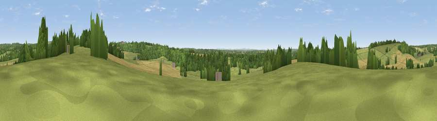

Viewpoint near Bishop's Waltham
#30774 in England · top 32% of its area beats it · near Bishop's WalthamWhere it is
The exact computed spot (SU 56675 18925). Click the marker for map links.
The view, rendered

A 360° render of this exact spot computed from the terrain model, tree cover and land cover — summer colours, afternoon light, calibrated against photographs of famous viewpoints. Real trees, hedges and buildings will differ in detail.
The panorama
Grey silhouette: terrain skyline in each direction (720 bearings, Earth curvature and refraction included). Dashed green: skyline with trees (+15 m) and buildings (+8 m) as obstacles. Blue strip: how far the ground is visible on each bearing.
Where the view opens
Wedge length = distance to the farthest visible ground on that bearing (vegetation-aware). Rings at 10, 25 and 50 km.
What fills the view
46% grassland · 27% woodland · 25% cropland · 2% built-up
Angular shares of the visible panorama (visual magnitude), not map area. Landscape diversity 0.49 (0–1 Shannon).
Key numbers
More beautiful places nearby
The staircase of upgrades: each row has a higher view potential than everything closer. Driving times are estimates from straight-line distance, calibrated against real road routing — check an actual route before setting out.
| Place | Direction | Drive | Score |
|---|---|---|---|
| Stephen's Castle Down | NNW · 1 km | ~4 min | 43.6 |
| Viewpoint near Upham | NW · 2 km | ~6 min | 44.2 |
| Viewpoint near Droxford | ESE · 3 km | ~7 min | 58.5 |
| Beacon Hill | NE · 5 km | ~11 min | 71.7 |
| Viewpoint near Meonstoke | ENE · 8 km | ~15 min | 74.8 |
| Viewpoint near Southwick | SSE · 14 km | ~26 min | 76.6 |
| Viewpoint near Buriton | E · 15 km | ~27 min | 80.0 |
| Beacon Hill | E · 24 km | ~39 min | 85.8 |
50.96697, -1.19428 · source: screening · position refined by local search. Computed location — check access rights before visiting.